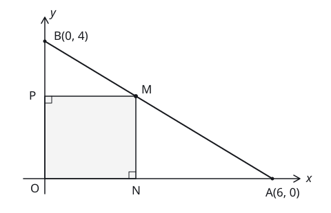

<link rel="preload" as="image" href="./question-diagram-white.svg"/><section data-agent-preview="" data-prism-theme="blueprint" data-p75-fixture="" class="min-w-0 space-y-4 bg-background p-3 text-foreground"><p class="text-ui-body">P75 验收夹具：白底图来自既有 CoordinateDiagram；题面与解析均包含图片。展开详情并切换三个 Tab。</p><div class="flex flex-wrap gap-2"><button type="button" class="relative inline-flex shrink-0 cursor-pointer items-center justify-center gap-2 whitespace-nowrap rounded-lg border font-medium text-base outline-none transition-shadow before:pointer-events-none before:absolute before:inset-0 before:rounded-[calc(var(--radius-lg)-1px)] pointer-coarse:after:absolute pointer-coarse:after:size-full pointer-coarse:after:min-h-11 pointer-coarse:after:min-w-11 focus-visible:ring-2 focus-visible:ring-ring focus-visible:ring-offset-1 focus-visible:ring-offset-background disabled:pointer-events-none disabled:opacity-64 data-loading:select-none data-loading:text-transparent sm:text-sm [&amp;_svg:not([class*=&#x27;opacity-&#x27;])]:opacity-80 [&amp;_svg:not([class*=&#x27;size-&#x27;])]:size-4.5 sm:[&amp;_svg:not([class*=&#x27;size-&#x27;])]:size-4 [&amp;_svg]:pointer-events-none [&amp;_svg]:-mx-0.5 [&amp;_svg]:shrink-0 h-9 px-[calc(--spacing(3)-1px)] sm:h-8 border-input bg-popover not-dark:bg-clip-padding text-foreground shadow-xs/5 not-disabled:not-active:not-data-pressed:before:shadow-[0_1px_--theme(--color-black/4%)] hover:bg-accent/50 data-pressed:bg-accent/50 *:data-[slot=button-loading-indicator]:text-foreground dark:bg-input/32 dark:data-pressed:bg-input/64 dark:hover:bg-input/64 dark:not-disabled:before:shadow-[0_-1px_--theme(--color-white/2%)] dark:not-disabled:not-active:not-data-pressed:before:shadow-[0_-1px_--theme(--color-white/6%)] [:disabled,:active,[data-pressed]]:shadow-none" data-slot="button" aria-pressed="false">light</button><button type="button" class="relative inline-flex shrink-0 cursor-pointer items-center justify-center gap-2 whitespace-nowrap rounded-lg border font-medium text-base outline-none transition-shadow before:pointer-events-none before:absolute before:inset-0 before:rounded-[calc(var(--radius-lg)-1px)] pointer-coarse:after:absolute pointer-coarse:after:size-full pointer-coarse:after:min-h-11 pointer-coarse:after:min-w-11 focus-visible:ring-2 focus-visible:ring-ring focus-visible:ring-offset-1 focus-visible:ring-offset-background disabled:pointer-events-none disabled:opacity-64 data-loading:select-none data-loading:text-transparent sm:text-sm [&amp;_svg:not([class*=&#x27;opacity-&#x27;])]:opacity-80 [&amp;_svg:not([class*=&#x27;size-&#x27;])]:size-4.5 sm:[&amp;_svg:not([class*=&#x27;size-&#x27;])]:size-4 [&amp;_svg]:pointer-events-none [&amp;_svg]:-mx-0.5 [&amp;_svg]:shrink-0 h-9 px-[calc(--spacing(3)-1px)] sm:h-8 border-input bg-popover not-dark:bg-clip-padding text-foreground shadow-xs/5 not-disabled:not-active:not-data-pressed:before:shadow-[0_1px_--theme(--color-black/4%)] hover:bg-accent/50 data-pressed:bg-accent/50 *:data-[slot=button-loading-indicator]:text-foreground dark:bg-input/32 dark:data-pressed:bg-input/64 dark:hover:bg-input/64 dark:not-disabled:before:shadow-[0_-1px_--theme(--color-white/2%)] dark:not-disabled:not-active:not-data-pressed:before:shadow-[0_-1px_--theme(--color-white/6%)] [:disabled,:active,[data-pressed]]:shadow-none" data-slot="button" aria-pressed="false">paper</button><button type="button" class="relative inline-flex shrink-0 cursor-pointer items-center justify-center gap-2 whitespace-nowrap rounded-lg border font-medium text-base outline-none transition-shadow before:pointer-events-none before:absolute before:inset-0 before:rounded-[calc(var(--radius-lg)-1px)] pointer-coarse:after:absolute pointer-coarse:after:size-full pointer-coarse:after:min-h-11 pointer-coarse:after:min-w-11 focus-visible:ring-2 focus-visible:ring-ring focus-visible:ring-offset-1 focus-visible:ring-offset-background disabled:pointer-events-none disabled:opacity-64 data-loading:select-none data-loading:text-transparent sm:text-sm [&amp;_svg:not([class*=&#x27;opacity-&#x27;])]:opacity-80 [&amp;_svg:not([class*=&#x27;size-&#x27;])]:size-4.5 sm:[&amp;_svg:not([class*=&#x27;size-&#x27;])]:size-4 [&amp;_svg]:pointer-events-none [&amp;_svg]:-mx-0.5 [&amp;_svg]:shrink-0 h-9 px-[calc(--spacing(3)-1px)] sm:h-8 border-input bg-popover not-dark:bg-clip-padding text-foreground shadow-xs/5 not-disabled:not-active:not-data-pressed:before:shadow-[0_1px_--theme(--color-black/4%)] hover:bg-accent/50 data-pressed:bg-accent/50 *:data-[slot=button-loading-indicator]:text-foreground dark:bg-input/32 dark:data-pressed:bg-input/64 dark:hover:bg-input/64 dark:not-disabled:before:shadow-[0_-1px_--theme(--color-white/2%)] dark:not-disabled:not-active:not-data-pressed:before:shadow-[0_-1px_--theme(--color-white/6%)] [:disabled,:active,[data-pressed]]:shadow-none" data-slot="button" aria-pressed="false">dark</button><button type="button" class="relative inline-flex shrink-0 cursor-pointer items-center justify-center gap-2 whitespace-nowrap rounded-lg border font-medium text-base outline-none transition-shadow before:pointer-events-none before:absolute before:inset-0 before:rounded-[calc(var(--radius-lg)-1px)] pointer-coarse:after:absolute pointer-coarse:after:size-full pointer-coarse:after:min-h-11 pointer-coarse:after:min-w-11 focus-visible:ring-2 focus-visible:ring-ring focus-visible:ring-offset-1 focus-visible:ring-offset-background disabled:pointer-events-none disabled:opacity-64 data-loading:select-none data-loading:text-transparent sm:text-sm [&amp;_svg:not([class*=&#x27;opacity-&#x27;])]:opacity-80 [&amp;_svg:not([class*=&#x27;size-&#x27;])]:size-4.5 sm:[&amp;_svg:not([class*=&#x27;size-&#x27;])]:size-4 [&amp;_svg]:pointer-events-none [&amp;_svg]:-mx-0.5 [&amp;_svg]:shrink-0 h-9 px-[calc(--spacing(3)-1px)] sm:h-8 border-input bg-popover not-dark:bg-clip-padding text-foreground shadow-xs/5 not-disabled:not-active:not-data-pressed:before:shadow-[0_1px_--theme(--color-black/4%)] hover:bg-accent/50 data-pressed:bg-accent/50 *:data-[slot=button-loading-indicator]:text-foreground dark:bg-input/32 dark:data-pressed:bg-input/64 dark:hover:bg-input/64 dark:not-disabled:before:shadow-[0_-1px_--theme(--color-white/2%)] dark:not-disabled:not-active:not-data-pressed:before:shadow-[0_-1px_--theme(--color-white/6%)] [:disabled,:active,[data-pressed]]:shadow-none" data-slot="button" aria-pressed="true">blueprint</button><button type="button" class="relative inline-flex shrink-0 cursor-pointer items-center justify-center gap-2 whitespace-nowrap rounded-lg border font-medium text-base outline-none transition-shadow before:pointer-events-none before:absolute before:inset-0 before:rounded-[calc(var(--radius-lg)-1px)] pointer-coarse:after:absolute pointer-coarse:after:size-full pointer-coarse:after:min-h-11 pointer-coarse:after:min-w-11 focus-visible:ring-2 focus-visible:ring-ring focus-visible:ring-offset-1 focus-visible:ring-offset-background disabled:pointer-events-none disabled:opacity-64 data-loading:select-none data-loading:text-transparent sm:text-sm [&amp;_svg:not([class*=&#x27;opacity-&#x27;])]:opacity-80 [&amp;_svg:not([class*=&#x27;size-&#x27;])]:size-4.5 sm:[&amp;_svg:not([class*=&#x27;size-&#x27;])]:size-4 [&amp;_svg]:pointer-events-none [&amp;_svg]:-mx-0.5 [&amp;_svg]:shrink-0 h-9 px-[calc(--spacing(3)-1px)] sm:h-8 border-input bg-popover not-dark:bg-clip-padding text-foreground shadow-xs/5 not-disabled:not-active:not-data-pressed:before:shadow-[0_1px_--theme(--color-black/4%)] hover:bg-accent/50 data-pressed:bg-accent/50 *:data-[slot=button-loading-indicator]:text-foreground dark:bg-input/32 dark:data-pressed:bg-input/64 dark:hover:bg-input/64 dark:not-disabled:before:shadow-[0_-1px_--theme(--color-white/2%)] dark:not-disabled:not-active:not-data-pressed:before:shadow-[0_-1px_--theme(--color-white/6%)] [:disabled,:active,[data-pressed]]:shadow-none" data-slot="button" aria-pressed="false">blueprint-night</button><button type="button" class="relative inline-flex shrink-0 cursor-pointer items-center justify-center gap-2 whitespace-nowrap rounded-lg border font-medium text-base outline-none transition-shadow before:pointer-events-none before:absolute before:inset-0 before:rounded-[calc(var(--radius-lg)-1px)] pointer-coarse:after:absolute pointer-coarse:after:size-full pointer-coarse:after:min-h-11 pointer-coarse:after:min-w-11 focus-visible:ring-2 focus-visible:ring-ring focus-visible:ring-offset-1 focus-visible:ring-offset-background disabled:pointer-events-none disabled:opacity-64 data-loading:select-none data-loading:text-transparent sm:text-sm [&amp;_svg:not([class*=&#x27;opacity-&#x27;])]:opacity-80 [&amp;_svg:not([class*=&#x27;size-&#x27;])]:size-4.5 sm:[&amp;_svg:not([class*=&#x27;size-&#x27;])]:size-4 [&amp;_svg]:pointer-events-none [&amp;_svg]:-mx-0.5 [&amp;_svg]:shrink-0 h-9 px-[calc(--spacing(3)-1px)] sm:h-8 border-input bg-popover not-dark:bg-clip-padding text-foreground shadow-xs/5 not-disabled:not-active:not-data-pressed:before:shadow-[0_1px_--theme(--color-black/4%)] hover:bg-accent/50 data-pressed:bg-accent/50 *:data-[slot=button-loading-indicator]:text-foreground dark:bg-input/32 dark:data-pressed:bg-input/64 dark:hover:bg-input/64 dark:not-disabled:before:shadow-[0_-1px_--theme(--color-white/2%)] dark:not-disabled:not-active:not-data-pressed:before:shadow-[0_-1px_--theme(--color-white/6%)] [:disabled,:active,[data-pressed]]:shadow-none" data-slot="button" aria-pressed="false">嵌套核心主题</button></div><article data-question-id="Q-M-004" data-question-level="L2" aria-labelledby="_R_3_" class="prism-question min-w-0 rounded-xl bg-card p-4 text-card-foreground shadow-xs/5 ring-1 ring-border"><header class="mb-3 flex min-w-0 flex-wrap items-start gap-2.5"><div class="prism-question-heading flex min-w-0 flex-1 flex-wrap items-baseline gap-x-3 gap-y-1"><div class="flex w-full min-w-0 items-start gap-2"><h3 id="_R_3_" class="min-w-0 flex-1 break-words text-item-title">动点与矩形面积</h3></div><p data-question-attributes="" class="prism-question-attributes w-full min-w-0 text-ui-meta tabular-nums text-muted-foreground"><span class="inline-block whitespace-nowrap">解答题</span><span class="inline-block whitespace-nowrap"> · 12 分</span><span class="inline-block whitespace-nowrap"> · 整题</span><span class="inline-block whitespace-nowrap"> · 含 3 个小问</span></p></div></header><div class="prism-question-copy min-w-0 text-read-body text-foreground"><div class="space-y-3"><p>在平面直角坐标系中，O 为原点，A(6, 0)，B(0, 4)。M 为线段 AB 上除端点外的动点，N、P 分别为 M 在 x、y 轴上的垂足，构成矩形 ONMP。</p><p>设 ON = x，且 0 &lt; x &lt; 6。根据上述条件，回答下列问题。</p></div><figure class="my-5 w-full max-w-[28rem]"><svg viewBox="0 0 480 310" class="block h-auto w-full text-foreground" role="img" aria-labelledby="_R_2sr_-title _R_2sr_-description"><title id="_R_2sr_-title">直角坐标系中的矩形 ONMP</title><desc id="_R_2sr_-description">O为原点，A在x轴坐标6处，B在y轴坐标4处。M为线段AB上的示意点，N和P分别为其在x轴和y轴上的垂足。四点O、N、M、P构成矩形。</desc><g fill="none" stroke="currentColor" stroke-width="1.5" stroke-linecap="round" stroke-linejoin="round"><path d="M34 260H435m-9 -5 9 5-9 5M65 282V25m-5 9 5-9 5 9"></path><path d="M65 60 395 260" stroke-width="2"></path><path d="M65 260H197V140H65Z" fill="currentColor" fill-opacity=".045"></path><path d="M187 260v-10h10M65 150h10v-10" stroke-width="1"></path></g><g fill="currentColor"><circle cx="197" cy="140" r="3"></circle><circle cx="395" cy="260" r="2.5"></circle><circle cx="65" cy="60" r="2.5"></circle></g><g fill="currentColor" font-size="17" font-family="system-ui,sans-serif"><text x="44" y="280">O</text><text x="385" y="286">A(6, 0)</text><text x="78" y="58">B(0, 4)</text><text x="205" y="136">M</text><text x="191" y="283">N</text><text x="42" y="145">P</text><text x="444" y="265" font-style="italic">x</text><text x="73" y="24" font-style="italic">y</text></g></svg><figcaption class="mt-1 flex flex-wrap items-center justify-between gap-2 text-ui-hint text-muted-foreground"><span>M 为示意位置。</span><button type="button" class="relative inline-flex shrink-0 cursor-pointer items-center justify-center whitespace-nowrap rounded-lg border font-medium text-base outline-none transition-shadow before:pointer-events-none before:absolute before:inset-0 before:rounded-[calc(var(--radius-lg)-1px)] pointer-coarse:after:absolute pointer-coarse:after:size-full pointer-coarse:after:min-h-11 pointer-coarse:after:min-w-11 focus-visible:ring-2 focus-visible:ring-ring focus-visible:ring-offset-1 focus-visible:ring-offset-background disabled:pointer-events-none disabled:opacity-64 data-loading:select-none data-loading:text-transparent sm:text-sm [&amp;_svg:not([class*=&#x27;opacity-&#x27;])]:opacity-80 [&amp;_svg:not([class*=&#x27;size-&#x27;])]:size-4.5 sm:[&amp;_svg:not([class*=&#x27;size-&#x27;])]:size-4 [&amp;_svg]:pointer-events-none [&amp;_svg]:-mx-0.5 [&amp;_svg]:shrink-0 h-8 gap-1.5 px-[calc(--spacing(2.5)-1px)] sm:h-7 border-transparent text-foreground hover:bg-accent data-pressed:bg-accent *:data-[slot=button-loading-indicator]:text-foreground" data-slot="dialog-trigger" tabindex="0" data-base-ui-click-trigger="" id="base-ui-_R_fksr_" aria-haspopup="dialog" aria-expanded="false"><svg xmlns="http://www.w3.org/2000/svg" width="24" height="24" viewBox="0 0 24 24" fill="none" stroke="currentColor" stroke-width="2" stroke-linecap="round" stroke-linejoin="round" class="lucide lucide-expand" aria-hidden="true"><path d="m15 15 6 6"></path><path d="m15 9 6-6"></path><path d="M21 16v5h-5"></path><path d="M21 8V3h-5"></path><path d="M3 16v5h5"></path><path d="m3 21 6-6"></path><path d="M3 8V3h5"></path><path d="M9 9 3 3"></path></svg>放大图形</button></figcaption></figure><ol aria-label="题目小问" class="mt-5 space-y-5"><li data-part-id="1" class="flex min-w-0 gap-2"><span class="shrink-0">（1）</span><div class="min-w-0 flex-1">求直线 AB 的方程。</div></li><li data-part-id="2" class="flex min-w-0 gap-2"><span class="shrink-0">（2）</span><div class="min-w-0 flex-1">写出矩形面积 S 关于 x 的函数表达式，并求面积的最大值及此时 x 的值。</div></li><li data-part-id="3" class="flex min-w-0 gap-2"><span class="shrink-0">（3）</span><div class="min-w-0 flex-1">当矩形面积不小于 <math class="prism-math" display="inline" aria-label="三分之十六"><mfrac><mn>16</mn><mn>3</mn></mfrac></math> 时，求 x 的取值范围。</div></li></ol></div><div data-orientation="horizontal" aria-orientation="horizontal" role="toolbar" data-slot="toolbar" aria-label="动点与矩形面积操作" class="relative flex gap-2 not-dark:bg-clip-padding mt-3 flex-wrap items-center gap-y-2 rounded-none border-0 bg-transparent p-0 text-foreground"><div data-orientation="horizontal" role="group" data-slot="toolbar-group" class="flex items-center gap-1 flex-wrap"><button type="button" class="relative inline-flex shrink-0 cursor-pointer items-center justify-center gap-2 whitespace-nowrap rounded-lg border font-medium text-base outline-none transition-shadow before:pointer-events-none before:absolute before:inset-0 before:rounded-[calc(var(--radius-lg)-1px)] pointer-coarse:after:absolute pointer-coarse:after:size-full pointer-coarse:after:min-h-11 pointer-coarse:after:min-w-11 focus-visible:ring-2 focus-visible:ring-ring focus-visible:ring-offset-1 focus-visible:ring-offset-background disabled:pointer-events-none disabled:opacity-64 data-loading:select-none data-loading:text-transparent sm:text-sm [&amp;_svg:not([class*=&#x27;opacity-&#x27;])]:opacity-80 [&amp;_svg:not([class*=&#x27;size-&#x27;])]:size-4.5 sm:[&amp;_svg:not([class*=&#x27;size-&#x27;])]:size-4 [&amp;_svg]:pointer-events-none [&amp;_svg]:-mx-0.5 [&amp;_svg]:shrink-0 h-9 px-[calc(--spacing(3)-1px)] sm:h-8 border-transparent text-foreground hover:bg-accent data-pressed:bg-accent *:data-[slot=button-loading-indicator]:text-foreground" aria-disabled="false" data-slot="toolbar-button" data-orientation="horizontal" data-focusable="" tabindex="-1" aria-label="动点与矩形面积详情" aria-expanded="false" aria-controls="_R_3_-details"><svg xmlns="http://www.w3.org/2000/svg" width="24" height="24" viewBox="0 0 24 24" fill="none" stroke="currentColor" stroke-width="2" stroke-linecap="round" stroke-linejoin="round" class="lucide lucide-chevron-down motion-safe:transition-transform" aria-hidden="true"><path d="m6 9 6 6 6-6"></path></svg>详情</button></div></div><div data-closed="" data-slot="collapsible"></div></article></section>
